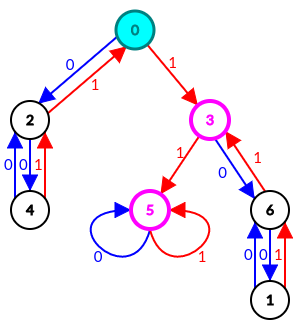

对于一个长度为奇数 $N$ 的 $\texttt 0/\texttt 1$ 串 $S$，被称为漂亮的，如果我们可以执行如下操作 $\dfrac {N - 1} 2$ 次得到串 $\texttt 1$：
现在 Taichi 有一个由 $\texttt 0, \texttt 1, \texttt ?$ 构成的串 $S$。请你帮她求出，有多少个将 $\texttt ?$ 替换为 $\texttt 0$ 或 $\texttt 1$ 的方案，使得最终得到的串是漂亮的。
共一行，包含一个由 $\texttt 0, \texttt 1, \texttt ?$ 构成的字符串 $S$ ($1 \leq \left| S \right| \leq 3 \times 10^5; 2 \nmid \left| S \right|$)。
输出一行一个整数，表示通过将 $\texttt ?$ 替换为 $\texttt 0$ 或 $\texttt 1$ 所能得到的漂亮的串的个数模 $10^9 + 7$ 的结果。
我们先来分析，怎样的串是漂亮的。
首先，我们归纳一下这可行的 $8$ 种操作，可以发现它主要可以分为 $3$ 种：
而且，这三类操作的优先级是 1. > 2. > 3.。即有 1. 操作的情况下先做 1.，没有 1. 的情况下，有 2., 3. 操作的情况下先做 2.。
为证明这个结论，先给出一个 (显然的) 引理：
(单调性引理) 若 $s$ 是漂亮的，则将 $s$ 中某个 $\texttt 0$ 改成 $\texttt 1$ 后，得到的串也是漂亮的 (即漂亮的性质对字符串的偏序具有单调性)。
只需按照 $s$ 的操作序列进行操作即可。
先证 1. 的优先级高于 2.，为证明优先级高确实成立，只需说明：如果 "不做 1" (即 "做 2" 或 "做 3") 可以使其变为 $\texttt 1$，则 "做 1" 同样也能使其变为 $\texttt 1$。
设 $S$ 中存在连续三个 $\texttt 0$，因此不妨可以设 $s = a \cdot \texttt{0001} \cdot b$ (如果不能这样假设，则 $s$ 为全 $\texttt 0$ 串，显然不能变出 $\texttt 1$)。
对于一个不这样做变为 $1$ 的策略，考虑这 $3$ 个 $\texttt 0$ 首次参与操作的方式。
如果就是操作 1，因此只需要移动一下操作次序即可。
否则，最终对待这 $3$ 个 $\texttt 0$ 的方式必为操作 2. —— 去掉相邻的一对 $0, 1$。
于是，$s = a \cdot \texttt{00} \color {red} {\texttt{01}} \cdot b$ 会变为 $s' = a \cdot \texttt{00} \cdot b$，而它可以变为 $1$ (即 $a \cdot \texttt{00} \cdot b$ 是漂亮的)。
而事实上，我们可以通过操作这 $3$ 个 $\texttt 0$，使之变为 $a \cdot \texttt{01} \cdot b$。由单调性引理知它也是漂亮的，证毕。
再证 2. 的优先级高于 3.。同样，只需说明，如果 "做 3" 能完成目的，则 "做 2" 也能完成目的。
设 $S$ 中存在连续三个 $\texttt 1$。下面说明，如果不是万不得已 ($s$ 为全 $\texttt 1$ 串)，则接下来的一步一定不是使用操作 3。
不妨设 $s = a \cdot \texttt 1^K \cdot \texttt 0 \cdot b$ ($K \geq 3$)，如果我们下一步做了操作 3，则 $s' = a \cdot \texttt 1^{K-2} \cdot \texttt 0 \cdot b$。由假设，$s'$ 是漂亮的。
事实上，我们可以将最后一个 $\texttt 1$ 和 $\texttt 0$ 去掉 (某个操作 2)，从而使 $s$ 变为 $a \cdot \texttt 1^{K-1} \cdot b$，由单调性引理知，它也是漂亮的，证毕。
在这个引理下，我们就有一种贪心算法了：
从左往右加入字符，如果满足了操作 1，则立即执行操作 1，如果满足了操作 2 且今后不会出现与之相交的操作 1 (如 $\texttt{10}$ 满足操作 2 的 条件，但是可能会发展为 $\texttt{1000}$，此时操作 1 就比较划算；而 $\texttt{01}$ 满足操作 2 的条件，且今后不可能出现与之相交的操作 1)，则立即执行操作 2。
(ps: 对此过程的一个解释是：对于任意的 $\texttt 0/\texttt 1$ 串 $s$，$\texttt 0 \cdot s$ 和 $\texttt{000} \cdot s$ 是否漂亮是完全相同的，即如果前者漂亮，则后者也漂亮，如果后者漂亮，则前者也漂亮。同理，$\texttt{101} \cdot s$ 和 $\texttt 1 \cdot s$ 是否漂亮也是完全相同的)
而对于出现操作 3 的情形，则说明我们开头就存在 $3$ 个 $\texttt 1$。而事实上，如果开头存在 $2$ 个 $\texttt 1$，我们就可以将后面的所有字符合并为一个，然后与它操作，从而得到 $\texttt 1$。
因此，基于栈的思想，可以得到这样一个算法：
每次向栈中加一个字符，如果栈顶 $3$ 个字符为 $\texttt{000}$，则弹出 $2$ 个 $\texttt 0$，如果栈顶为 $\texttt 1$，次栈顶为 $\texttt 0$，且栈中至少有三个元素，则将这个 $\texttt 1$ 和 $\texttt 0$ 弹出。
如果栈底出现两个 $\texttt 1$，则退出程序，返回 $\mathrm{true}$，否则，返回最后的栈是否只包含一个 $\texttt 1$ (如果是，则为 $\mathrm{true}$，反之则为 $\mathrm{false}$)。
可以证明，用这种算法，栈中出现的元素情况至多只有如下 $8$ 种 (左边表示栈底，右边表示栈顶)：$$ \large \color {fuchsia} {\left[ \, \right], \left[ \texttt 0 \right], \left[ \texttt 1 \right], \left[ \texttt 0, \texttt 0 \right], \left[ \texttt 0, \texttt 1 \right], \left[ \texttt 1, \texttt 0 \right], \color {red} {\left[ \texttt 1, \texttt 1 \right]}, \left[ \texttt 1, \texttt 0, \texttt 0 \right]} $$
其中红色的元素表示遇到这种情况立即 break (return true)，不再处理新的串。
这个算法进一步阐释了上面红字所述的 "等价类" 的思想：若两个串 "等价"，则它们分别经过栈后，最终栈的情况是相同的。
更加一般地，对于上面的 "等价类" 思想：我们可以抽象到 (确定性) 有限状态自动机 (DFA) —— 因为这描述的，其实就是 DFA 中状态等价的定义。
我们把上面 $8$ 种栈的状态，看成一个 "等价类" —— 即 DFA 中的 "状态"。
而对应的转移关系，可以由上面的操作过程所得到。
因此，我们最终得到了这样一个结论：存在一个只有 $7$ 个状态的 (已最小化) DFA，它接受一个长度为奇数的字符串当且仅当它是漂亮的 (番外：这个 DFA 又被称为 "毕克自动机"，因为是 wwwwodddd 先发现的)。
"毕克自动机" 的状态及转移如下图：
(图例：青色表示初始状态，粉色表示接受状态)
现在我们已经完成了判定问题，那怎么计数呢？
其实已经不难了，我们都有 DFA 了啊！
想想你们之前在 AC 自动机上是怎么计数的？在 AC 自动机上 DP 呗！在一般自动机上的计数以及 DP，也不是没见过。
于是，我们只需令 $f_{i, j}$ 表示考虑 $S$ 的前 $i$ 位，当前在状态 $j$ 下的方案数，就可以 DP 了，转移直接讨论下一位能否为 $0$，及能否为 $1$。
总时间复杂度 $O \left( B \cdot \left| S \right| \right)$，其中 $B$ (状态数) $= 8$。
#include <bits/stdc++.h>
#define trans(x) add(nxt[ d[i][x] ], cur[i])
const int N = 300054, mod = 1000000007;
const int d[7][2] = {{2, 3}, {6, 6}, {4, 0}, {6, 5}, {2, 2}, {5, 5}, {1, 3}};
int dp_[2][7], *cur = *dp_, *nxt = dp_[1];
char s[N];
inline int & add(int &x, const int y) {return x += y - mod, x += x >> 31 & mod;}
int main() {
int i, ans; char *p = s; *nxt = 1;
for (scanf("%s", s); *p; ++p) {
std::swap(cur, nxt), memset(nxt, 0, sizeof *dp_);
for (i = 0; i < 7; ++i) *p == 48 || trans(1), *p == 49 || trans(0);
}
printf("%d\n", add(ans = nxt[3], nxt[5]));
return 0;
}
坑1：注意接受状态有两个而不是一个，最后统计时需要求它们的和。